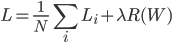
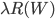

Computer Vision Midterm Study Guide
Ibrahim Tigrek
The purpose of cross validation is to determine the optimum values of the hyperparameters, which are the parameters that are set for the algorithm.
k-fold cross-validation is performed by dividing the training set into k sets, each one called a fold. Let’s take k = 5, which is what is usually used. First, we train a model with a certain set of hyperparameters on the first 4 folds, and validate it (i.e. test it) on the 5th fold. Then we do the same, but this time the validation set is the 4th fold. Then again with the 3rd fold, and so on for all 5 possible combinations. For each of these iterations, we get a performance measure. We average these to get the final performance measure of the model with this specific set of hyperparameters.
We do all of this again for another model, that has a different set of hyperparameters. And again for another model, and so on. Once we are satisfied with all the combinations of hyperparameters that we have validated, we choose the model that gave us the best overall performance measure. Then, and only then, do we use the test data, to test our final model.
Strength of regularization depends on the hyperparameter λ.
Regularization makes the model simpler, and spreads out the weights.
When building neural networks, it is recommended to start with as many neurons as the computer can handle, and apply regularization.

Also called Lasso regression. Lasso regression usually reduces useless features to zero.
is differentiable.

Also called Ridge regression.
Is a combination of lasso and ridge regression. A hyperparameter (r) determines how much of lasso and ridge are used.
Ensures that the norm of all of the weights is less than a specified bound. This is to prevent the neurons from becoming saturated.
Starting with a fully-connected neural network, some neurons are killed off randomly based on a predefined probability. The “killing” of the neurons is done by cutting off all of the input to that neuron.
Dropout regularization is used to weaken the strength of the network, thus making it harder for it to memorize the training data.
For every weight, the partial derivative of the loss function with respect to that weight is determined. Then, that weight is decreased by the product of the step size and the gradient (the partial derivative).

A small group of data points (e.g. 128) are used to determine the gradient.
The gradient is calculated and a step is taken for single data point. The data point in question is chosen randomly from the full dataset.
Numerical gradient
Analytic gradient
Mini-batch
stochastic
step size
Each node is examined independently, where only the input values, the output value, and the gradient propagating back to this node are necessary. Let’s call our node N, and the two inputs x and y. Let’s call the function at this node f, where f produces the output of this node from x and y, i.e. the output is f(x, y). Finally, let’s call the gradient that has propagated back to N from the next node, d. It is our job to compute the gradients dx and dy, which are the gradients that N will propagate back to the nodes before it, where dx will go back along the path that brought x to N, and dy similarly for y.
dx = d * f’(x)
dy = d * f’(y)
where f’ is the partial derivative of f with respect to the argument. If, when computing f’(x), the function contains the variable y, then the value of the input in that specific case is used.
On some gates (nodes) have simple interpretations.
f(x, y) = x + y
dx = d
dy = d
f(x, y) = max(x, y), assuming x > y,
dx = d
dy = 0
f(x, y) = x * y
dx = d * y
dy = d * x
There are no hidden layers in the neural network.
Usually, the input vector x, to a neuron, is fed through the following formula: y = Wx + b, where W is a matrix; y and b are vectors. But the bias trick allows us to use only one matrix without adding a bias separately; by concatenating W with b which creates W’and adding 1 to the bottom of the x vector, creating x’. So, we get the same y as earlier by y = W’ * x’.
[ explain SVM ]
(Multinomial Logistic Regression)
[ insert formula ]
[ explain softmax ]
When the number of labels is really large, a variation of softmax, called “hierarchical softmax”, is used, since it is faster to evaluate
A network consisting of inputs feeding into a single neuron which has a step function as its activation function. Single perceptron wasn’t enough to solve the XOR-problem. However, creating a hidden layer with two perceptrons can solve the problem.
Most commonly used in neural networks.
Consist of two parts: the error and the regularization. (see Regularization)
[ insert formula ]
Note: safety margin here is 1
Memorizes all data and labels. Predicts the label of the closest data point. (see L1 and L2 distance)
KNN summary : - in image classification we start with the training set and labels and must predict labels on test sets
- the KNN classifier predict labels based on the nearest neighbors:
- distance metrics and K are the hyper-parameters choose this in the validation set.
Two different distances 1 Manhattan : d(I1, I2) = Σ (|I1-I2|)
2- euclidean : d(I1,I2) = Σ √ (I1-I2)2
Predicts based on classes of majority of labels of k nearest neighbors. Odd number is used for k to prevent stalemate vote.
This classifier does no work to train.
random search
random local search
following the gradient
sigmoid
relu
hyperbolic tangent
leaky relu
maxout
Binary softmax classifier
Binary SVM classifier
mean subtraction
normalization
PCA (principal component analysis)
All the weights are initialized to zero. The downside is that this will cause all of them to undergo the same parameter updates. This means there is no asymmetry among the weights, making the network struggle to learn.
Zero-bias initialization works fine.
Normalizing the output of a layer before passing it to the next layer. This is to ensure that the neurons don’t get saturated.
The desired model is the one that is neither high bias nor high variance.
A model that is too simple is considered to have high bias and low variance. It is also called under-fitting.
A model that is too complex is considered to have high variance and low bias. It is also called over-fitting.
This occurs when the output of a neuron is insensitive to the input, i.e. it is the same regardless of any changes to the input. This is considered a dead, or dying, neuron. This happens when the input value has become very large or very small (negative).
L1 and L2 distance
binary cross entropy
L2 regression loss function
Hierarchical softmax
Momentum optimization
Stratified sampling
Vanishing gradient problem
SIFT (scale-invariant feature transform)
One-shot learning
2.2 http://cs231n.github.io/classification/
2.3 http://cs231n.github.io/linear-classify/
2.4 http://cs231n.github.io/optimization-1/
2.5 http://cs231n.github.io/optimization-2/
2.6 http://cs231n.github.io/neural-networks-1/
2.7 http://cs231n.github.io/neural-networks-2/
2.8 http://cs231n.github.io/neural-networks-3/
Neural networks representation: non-linear hypotheses (Andrew Ng, ML wk 4 lecture 8)
playground.tensorflow.org
vision.stanford.edu
http://vision.stanford.edu/teaching/cs231n-demos/linear-classify/
codewords.recurse.com
[a]hey man, go ahead and write in the doc. you don't have to comment :)